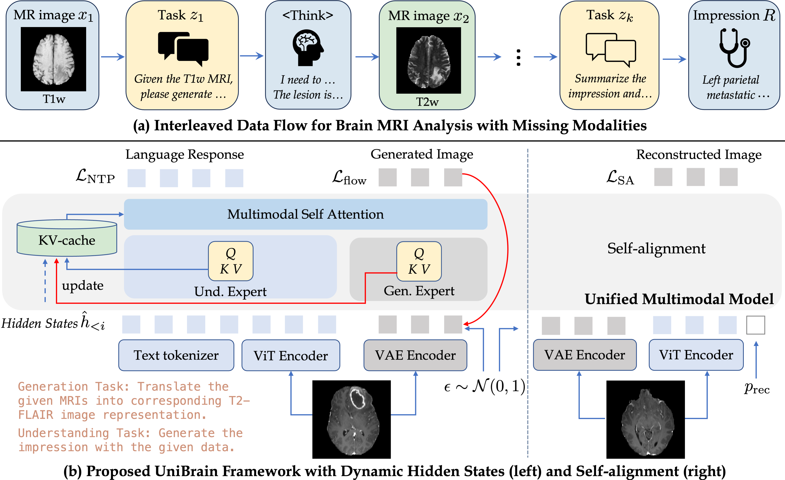

Abstract
Multimodal large language models (MLLMs) hold great potential for medicine, as they inherit knowledge from LLM and allow multiple data modalities to be integrated, analysed and interpreted in natural language. However, the field of medical MLLMs is constrained by non-trivial challenges, notably the scarcity of high-quality training data and the frequent occurrence of missing data in the real-world clinical setting. Here, we propose a novel unified multimodal model, UniBrain, for brain magnetic resonance image (MRI) analysis. To address potential missing brain MRI modalities, we employ a unified training strategy to perform joint imaging modality imputation and brain image understanding. During training, an interleaved and description-enriched data flow is constructed to train the model in an autoregressive manner, enabling medical reasoning with generated multimodal data. A self-alignment strategy is introduced to leverage dense image embeddings to learn fine-grained anatomical features without requiring detailed image captions. Furthermore, we propose a dynamic hidden state mechanism to alleviate the exposure bias during long-context multimodal inference. Extensive experiments on a multi-disease brain MRI dataset demonstrate that UniBrain achieves high performance for brain image imputation, understanding, and disease diagnosis under various extents of modality incompleteness.
Methodology

(a) Interleaved Data Flow: We formulate missing modality imputation and understanding as an autoregressive sequence modeling problem. Driven by a clinical instruction, UniBrain explicitly plans a conceptual step before synthesizing a missing sequence, seamlessly bridging the visual-semantic gap.
(b) Unified Modeling & Self-Alignment: Built upon the MoT architecture, UniBrain employs a self-alignment loss that conditions the generation expert on dense ViT embeddings. This mitigates the domain gap without demanding dense, pixel-level text descriptions.
(c) Dynamic Hidden States: To alleviate exposure bias in long-context generation, we introduce a training-time KV-cache mechanism. UniBrain conditions on its own self-generated visual artefacts during training, ensuring robust autoregressive inference.
Experimental Results
Diagnosis and Report Generation with Missing MRIs
UniBrain achieves state-of-the-art diagnostic accuracy, specifically scoring 74.47% Top-1 Accuracy in the highly challenging T1w-only availability setting, jumping to 82.06% with complete data.
| Methods | T1w only (Top-1) | T1w + T2w (Top-1) | T1w+T2w+T2f (Top-1) | Complete Data (Top-1) |
|---|---|---|---|---|
| ShaSpec (Implicit) | 63.61 | 71.98 | 75.26 | 77.19 |
| SimMLM (Implicit) | 65.98 | 74.47 | 76.60 | 78.72 |
| M2DN + UniBrain (Explicit) | 56.03 | 75.18 | 76.60 | - |
| BAGEL (MLLM) | 11.35 | 17.02 | 22.70 | 28.37 |
| UniBrain (Ours) | 74.47 | 76.60 | 78.01 | 82.06 |
Missing Modality Imputation Fidelity
While dedicated explicit modality imputers prioritize low-level pixel similarity (PSNR/SSIM), they suffer from disjointed feature spaces. UniBrain generates clinically usable outputs that drastically boost downstream Top-1 accuracy.
| Methods | T1w → T2w (PSNR) | T1w → T2w (Top-1) | T1w, T2w → T2f (Top-1) | T1w, T2w, T2f → T1c (Top-1) |
|---|---|---|---|---|
| MM-GAN | 23.08 | 56.74 | 56.03 | 60.19 |
| ResViT | 22.81 | 57.45 | 67.38 | 61.70 |
| UniMedVL | 19.82 | 56.03 | 63.12 | 56.74 |
| UniBrain (Ours) | 22.23 | 68.09 | 67.38 | 74.47 |
| UniBrain* (Ensemble) | 23.43 | 63.83 | 68.08 | 76.60 |
Qualitative Examples

Comparison of imputed images and report generation against baselines.

UniBrain accurately captures structural abnormalities compared to implicit models.

Robust reasoning with self-generated artefacts.
Future Works & Limitations
While UniBrain demonstrates strong performance in 2D slice-by-slice generation, a known limitation when synthesizing volumetric data is the lack of 3D contextual awareness. When individual 2D inferences are stacked to form a 3D volume, it results in a visible flickering effect along the z-axis. Future iterations of UniBrain will explore 3D-aware adaptations and temporal consistency modules to ensure smooth structural continuity across volumetric MRI scans.
Example of 2D slice-by-slice generation flickering.
Ground Truth 3D Volume for reference.
BibTeX
@inproceedings{song2026unibrain,
title={Unified Multimodal Model for Brain MRI Imputation and Understanding},
author={Song, Zhiyun and Liu, Che and Xia, Tian and Kori, Avinash and Bai, Wenjia},
booktitle={International Conference on Medical Image Computing and Computer-Assisted Intervention (MICCAI)},
year={2026},
url={https://github.com/zhiyuns/UniBrain}
}